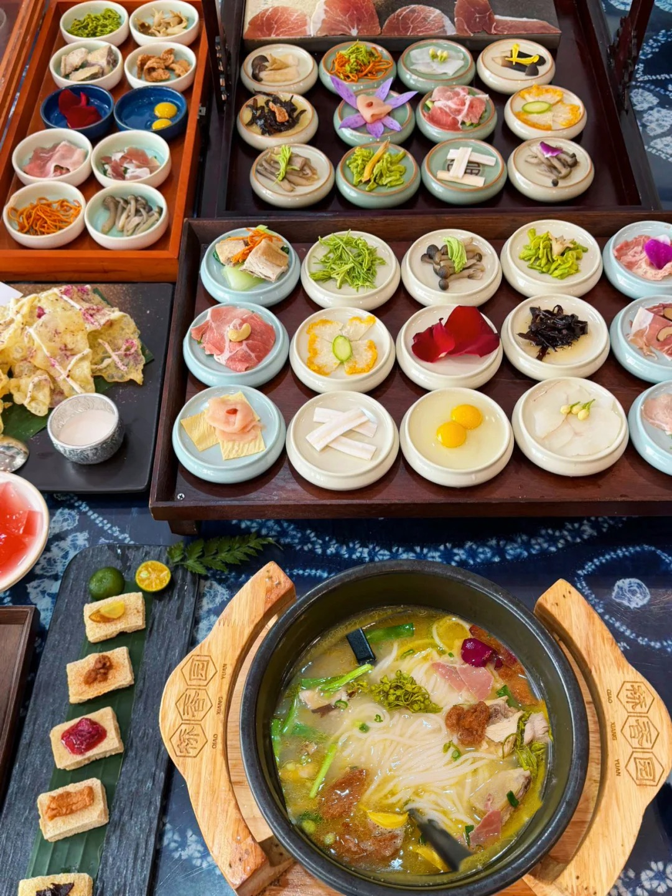
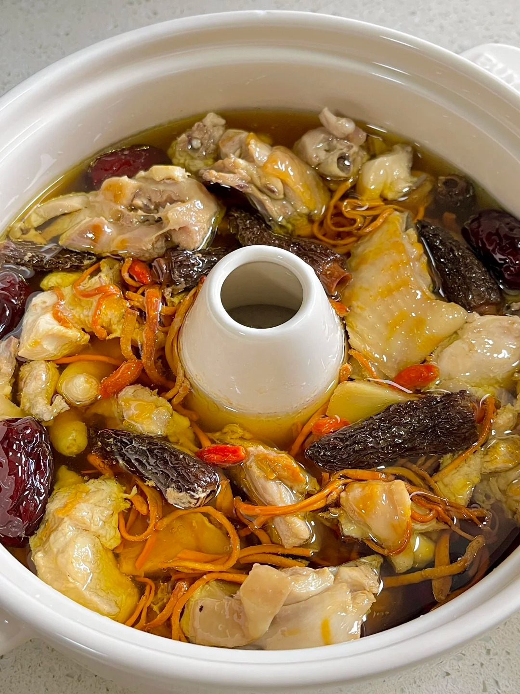
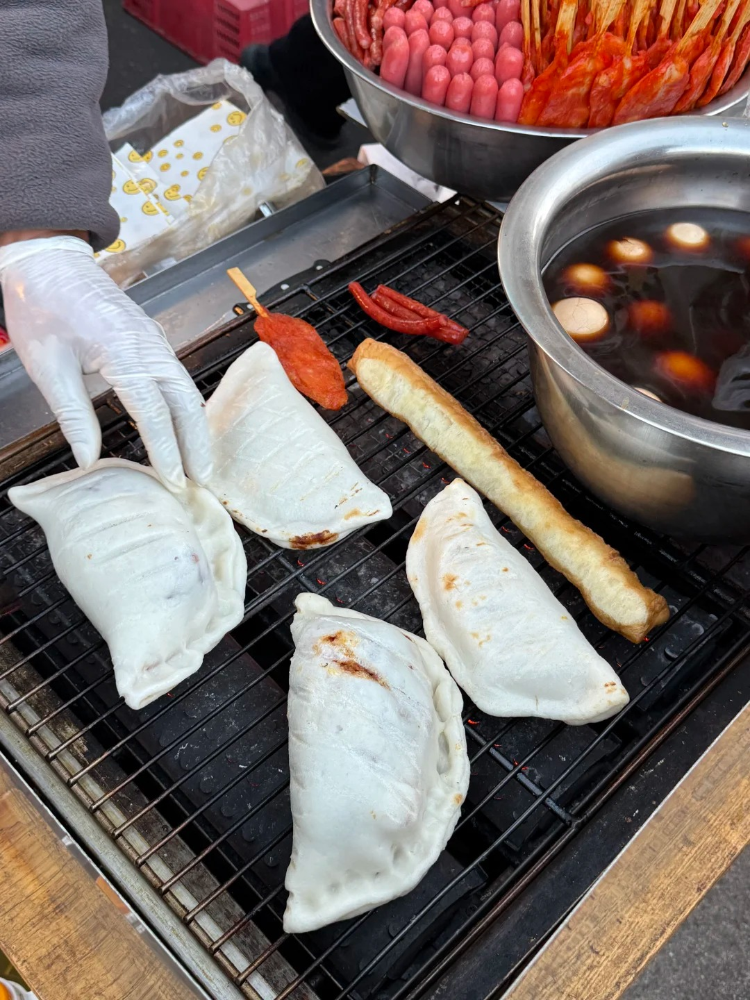
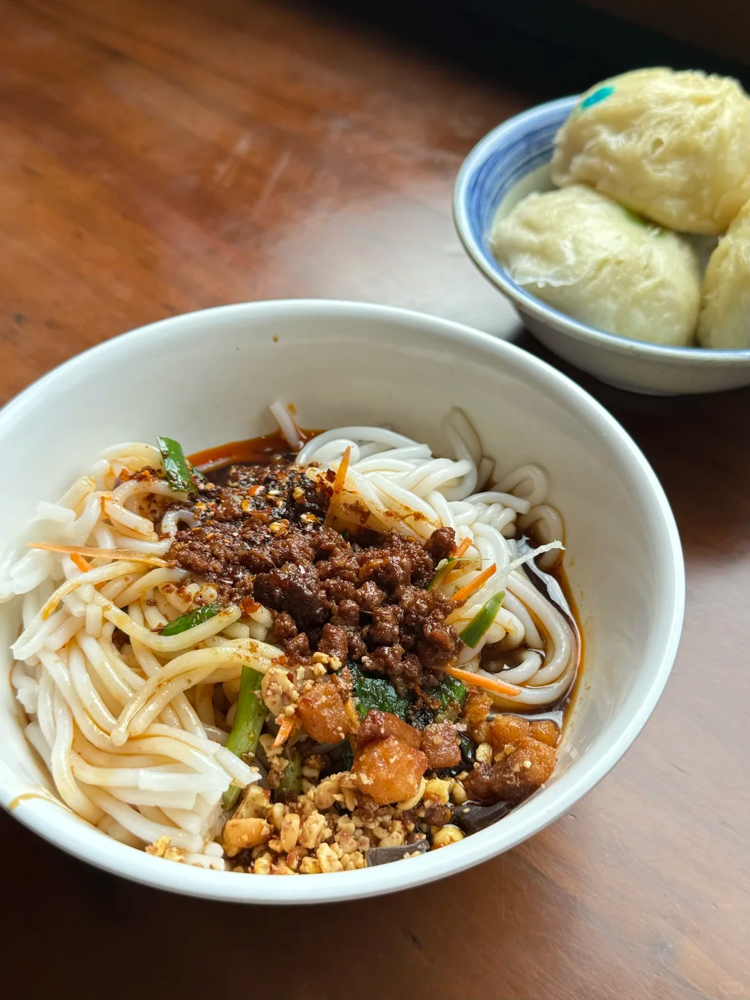

A culinary journey through Yunnan's delicate tastes

Arguably the most famous dish of Yunnan province. It features a boiling hot, rich chicken broth layered with chicken fat to retain heat, accompanied by raw quail eggs, thinly sliced meats, fresh vegetables, and delicate rice noodles that you cook fresh right at your table.

Known locally as Qi Guo Ji, this dish uses a unique porous clay pot to steam indigenous chicken. The steam condenses to form a crystal clear, intensely golden broth, often infused with precious local medicinal herbs like Sanqi and Tianma to maximize health benefits.

A beloved local breakfast staple. Erkuai is a type of dense, pounded rice brick. It is slice-roasted over a charcoal flame until perfectly golden and slightly puffed, then brushed lavishly with a combination of savory, spicy, or sweet-peanut sauces, rolled with a fried dough stick (Youtiao).

Also known as Liang Mi Xian, this is the ultimate refreshing choice during a warm afternoon. The cold rice noodles are generously tossed in homemade sweet soy sauce, sharp black vinegar, an abundance of fresh herbs, and topped with roasted crushed peanuts.